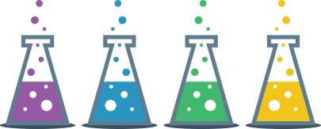
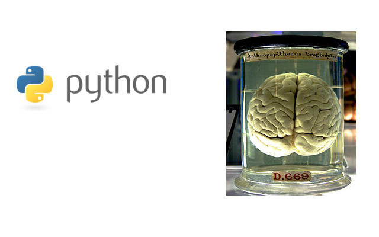
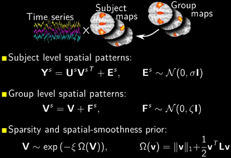
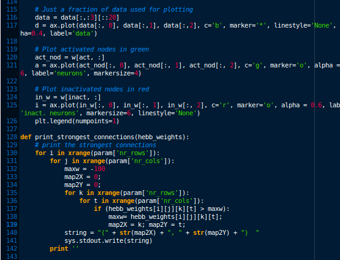
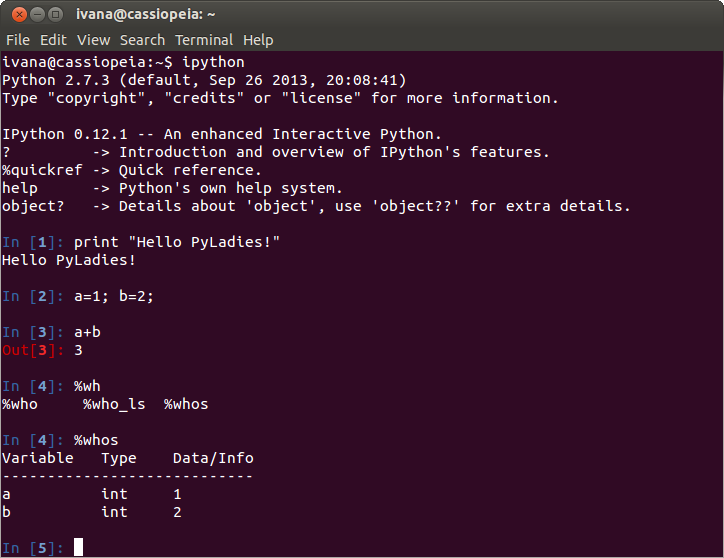

<!doctype html>
<html lang="en">

<head>
	<meta charset="utf-8">

	<title>Python in Science</title>

	<meta name="description" content="Slides for the talk on Python in science for PyLadies Berlin">
	<meta name="author" content="Ivana Kajic">

	<meta name="apple-mobile-web-app-capable" content="yes" />
	<meta name="apple-mobile-web-app-status-bar-style" content="black-translucent" />

	<meta name="viewport" content="width=device-width, initial-scale=1.0, maximum-scale=1.0, user-scalable=no">

	<link rel="stylesheet" href="css/reveal.css" type="text/css" media="screen" />
	<link rel="stylesheet" href="css/night.css" id="theme" />

	<!-- For syntax highlighting -->
	<link rel="stylesheet" href="lib/css/zenburn.css">

	<!-- If the query includes 'print-pdf', use the PDF print sheet -->
	<script>
		document.write( '<link rel="stylesheet" href="css/print/' + ( window.location.search.match( /print-pdf/gi ) ? 'pdf' : 'paper' ) + '.css" type="text/css" media="print">' );
	</script>

	<!--[if lt IE 9]>
	<script src="lib/js/html5shiv.js"></script>
	<![endif]-->
</head>

<body>

	<div class="reveal">

		<div class="slides">

<section data-markdown data-separator="^\n---\n$">
<script type="text/template">

# Python in Science 
Or how can Python help us understand the human brain? 



<small> PyLadies Berlin, November 2013 </small>

<small> [Ivana Kajic](mailto:ivana.kajic@gmail.com) Student@TU Berlin | [@kajic_ivana](http://twitter.com/kajic_ivana) </small>

---



---

<section class="image-slide" data-background="img/brain.jpg">

## The human brain

* Is only 2% of the weight of the body, but consumes approx. 25% of energy

* Contains 100,000,000,000 neurons which are connected with 60,000,000,000,000 synapses. There are more synapses in the brain than stars in the Milky way!

* Grey brain matter (*neocortex*) is doing "the" job and white brain matter is for communication between neurons

* Unrolling the neocortex would give us around four A4 sheets

---


---

## Can you actually explain how the whole brain works?

* Maybe, but it is very hard. We split the problem of understanding the brain into smaller ones and divide them to various researchers:

    * How does learning work?
    * How is information encoded in the brain?
    * How does human vision work?
    * How do we know that we are happy and not sad?

---

## Neuroscience

* Studies central nervous system (brain + spinal cord)

* Many different subdisciplines that investigate different aspects of human brain
    
    * Neurophysiology, neuroanatomy, clinical neuroscience, neurolinguistics, neuroeconomics and computational neuroscience...

* Computational neuroscience is a young discipline that uses math, computer science, physics and psychology to explain mechanisms in the human brain

---

### Mind reading

Work in progress in neurosciences: Is it possible to see what someone is thinking? 


<small> Image and research by [Jack Gallant's Lab](http://gallantlab.org/index.html) at the UC Berkeley</small>

---

## Mind reading: get your data!

* Brain recording using fMRI scanners

<div style="float:left;"> 
     
     
</div> 


---

### Mind reading: make sense out of data

* Make computational models and use them to make predictions

* This is where computational neuroscience kicks in

* Use of machine learning and data mining algorithms, simulations

<div style="float:left;">
	
	
</div>	

---

 
<small> Image via [Nature](http://www.nature.com/news/502428a-i2-jpg-7.13267?article=1.13989) </small>

---

### So where did we need Python in the mind reading example?               

* Process the data: e.g. remove noise caused by subject movements in the scanner

* Store and organize the data in some sensible way

* Extract patterns from data and build computational models

* Make pretty plots of our results: helps to understand what is happening and useful for communication among scientists

---


## Why did we choose Python?*                  

* It’s free and easy to use: already there on most *nix systems. Just run `python` in a terminal

* Great support: abundance of well maintained packages, especially tools needed in science

* Readable and clear code: hides low level implementation details while following common coding conventions

* Interactive: introspection of your code on the fly	

<small> * MATLAB, R and some other programming languages are also used</small>

---

## Where Python meets Science


* [SciPy](http://www.scipy.org/) Stack is open-source bundle of Python packages for mathematics, science, and engineering

* Some of the included packages in the SciPy stack: NumPy, SciPy library, Matplotlib, IPython, Pandas...

* There are two options to get these packages
    * Download each package separately ([instructions](https://github.com/ikajic/pyscience/blob/master/README.md))
    * Get the whole set as a single installation file: [Anaconda](http://continuum.io/downloads) or [Canopy](https://www.enthought.com/products/canopy/)


---

## Step 0: IPython

* [IPython](http://ipython.org/) is a simple yet powerful interactive environment to write Python code

* It's similar to the standard Python interpreter, but provides more functionality which makes coding easier and more efficient

* For example: auto-completion using `tab`, save values and restore them later, the history of commands, timing of functions

* IPython [Notebook](http://ipython.org/notebook.html) is a web-based interactive environment to write and execute code, write text and mathematical formulas, include plots...

---

### IPython



---

### IPython notebook (web-browser)


---

## Dealing with numbers: NumPy

* [NumPy](http://www.numpy.org/) is a powerful Python package for efficient manipulation with numbers 

* Numbers are "the data": measurements from experiments, results of computer simulations, etc.

* Numbers are stored in containers called `arrays` 

* For MATLAB users planning to switch to Python there is a [cheat sheet](http://wiki.scipy.org/NumPy_for_Matlab_Users)
 

---

### NumPy Array

* Basic data structure used to store numbers

* Vectors are one-dimensional arrays, matrices are two-dimensional, but we can also have N-dimensional arrays

    * Vector containing four numbers: `[1, 2, 3, 4]`
    * Matrix containing six numbers in two rows and three columns: 
        
        `[[1, 2, 3],`
        
        ` [4, 5, 6]]`


* Indexing starts with `0` (not `1`), so the first element in a vector is at the `0`-th position


---

``` python
>>> import numpy as np

# Create an array with numbers from 0 to 15
>>> a = np.arange(0, 15)
>>> a
array([ 0,  1,  2,  3,  4,  5,  6,  7,  8,  9, 10, 11, 12, 13, 14])

# What is the first element in the array? 
>>> a[0]
0

# What is the shape of our array?
>>> a.shape
(15,)

# Make a new array, this time with rows and columns
>>> b = a.reshape(3,5)
>>> b
array([[ 0,  1,  2,  3,  4],
       [ 5,  6,  7,  8,  9],
       [10, 11, 12, 13, 14]])
>>> b.shape
(3, 5)

# Get all the numbers in the second row 
>>> b[1, :]
array([5, 6, 7, 8, 9])

>>> type(b)
<type 'numpy.ndarray'>
```

---


    
* [Matplotlib](http://matplotlib.org/) is a Python package for data plotting

* Supports different plotting options: histograms, power spectra, bar charts, errorcharts, scatterplots... with just a few lines of code

* Ok, let's plot in Python!

---


### Study: How does the amount of chocolate influence happiness?

 

---

### Plotting code

```python
>>> import matplotlib.pylab as pl
>>> import numpy as np

# Load data on a drive into two NumPy arrays
>>> chocolate = np.load('chocolate.npy')
>>> happy = np.load('happiness.npy')

# Plot array chocolate vs array happy
>>> pl.plot(choc, happy)

# Label horizontal axis (x) and vertical axis (y)
>>> pl.xlabel('Chocolate (gram)')
>>> pl.ylabel('Happiness (smiling)')

# Give a title to our plot
>>> pl.title('Influence of chocolate on happiness')

>>> pl.grid(True)
>>> pl.savefig("chocolate.png")
>>> pl.show()
```       

---


### With matplotlib you can do this


---

### ... and this! 


* And much more! These examples are taken from the gallery at the [matplotlib page](http://matplotlib.org/gallery.html#) which contains many beautiful plots and the source code used to generate them

---

## NLTK

* [Natural language toolkit](http://nltk.org/) suitable for linguists, engineers, students, educators, researchers, and industry users alike 

* Suite of text processing libraries for classification, tokenization, stemming, tagging and parsing

* Example applications: RSS Feeds, extracting text from PDF, Word documents, Tweets ...                   

---

## More on NLTK

* Fundamentals of writing Python programs, working with corpora, categorizing text, analyzing linguistic structure...

* Available [online](http://nltk.org/book/) for free:                   


---

## A peek into the NLTK

```python
>>> import nltk
>>> sentence = "Good evening! Would you like some tea?"
>>> tokens = nltk.word_tokenize(sentence)
>>> tokens
['Good', 'evening', '!', 'Would', 'you', 'like', 'some', 'tea', '?']
>>> tagged = nltk.pos_tag(tokens)
>>> tagged
[('Good', 'NNP'), ('evening', 'NN'), ('!', '.'), 
('Would', 'MD'), ('you', 'PRP'), ('like', 'VB'), 
('some', 'DT'), ('tea', 'NN'), ('?', '.')]

# NNP and NN is abbreviation for a noun, VB for a verb and PRP for a personal pronoun
```

---

### Reading Jane Austen's Emma with NLTK *


* NLTK also includes short excerpts from some books provided by the Project Gutenberg

```python
>>> import nltk
>>> nltk.corpus.gutenberg.fileids()
['austen-emma.txt', 'austen-persuasion.txt', 'austen-sense.txt', 
'bible-kjv.txt', 'blake-poems.txt', 'bryant-stories.txt', 
'burgess-busterbrown.txt', ..., 
'shakespeare-hamlet.txt', 'shakespeare-macbeth.txt', 'whitman-leaves.txt']

>>> emma = nltk.corpus.gutenberg.words('austen-emma.txt')
>>> emma[10:20]
['I', 'Emma', 'Woodhouse', ',', 'handsome', ',', 'clever', ',', 'and', 'rich']

>>> print "Number of words:", len(emma)
Number of words: 192427
```
<small>\* But I'd rather recommend a cup of tea and a blanket istead of Python for book reading </small>

---

## 

* [Scikit-learn](http://scikit-learn.org/stable/index.html): satisifes all the data mining and data analysis needs 

* Abundance of algorithms for supervised and unsupervised learning 

* Classification, regression, clustering, model selection, dimensionality reduction and data preprocessing

---

<section class="image-slide" data-background="img/scikit_classifiers_.png">

---


## 

* [MDP](http://mdp-toolkit.sourceforge.net/) is a modular toolkit for data processing

* Set of algorithms for data mining, classification, signal processing, pattern recognition...

* In MDP every algorithm is referred to as a `node` which can be modified by a user

* Built on NumPy and SciPy

---

## MDP: Detection of objects

* Imagine having 2D geometrical objects such as filled or emtpy circles and rectangles which are made of random points, for example:
<center>  </center>

* Our goal is to find out how many objects there are in this image


---

## MDP: Detection of objects

* There are many ways to solve this problem, but we love neurons and will use a special type of a neural network called [growing neural gas (GNG)](http://en.wikipedia.org/wiki/Neural_gas) to solve it

* GNG spreads a sheet of neurons over the data and tries to position neurons so they maximally cover clusters of data

* At every time step, the number of neurons in network increase until some final condition is met

---

### Neural network in the beginning...


<center>  </center>

---

### ... and after the learning!


<center> </center>


---

### Code that does what we have just seen:

```python
import mdp

x = generate_random_circles_and_rectangles()

gng = mdp.nodes.GrowingNeuralGasNode(max_nodes=75)

STEP = 500
for i in range(0, x.shape[0], STEP):
    gng.train(x[i:i+STEP])
gng.stop_training()

n_obj = len(gng.graph.connected_components())
print n_obj
```

```
Output: 5
```

<ul><small> \* Complete source code is available [here](http://mdp-toolkit.sourceforge.net/code/examples/gng/gng.html) </small></ul>

---

## Python as a glue

* Python can be used to wrap libraries in other programming languages such as C, C++ , Java or Fortran (which are also used in science)

* This is useful when you need to speed up the execution of Python code or the libraries you need don't exist in Python

* [Cython](http://cython.org/): Wrap external C libraries

* [f2Py](http://cython.org/): Fortran to Python

* [swig](http://www.swig.org/): Turning C code into a Python module

---

## Hands-on session

* There are two tutorials, pick the one you like!

* [Basic tutorial](https://github.com/ikajic/pyscience/): Very simple data analysis using NumPy and Matplotlib
    * Recommended for Python beginners
    * The tutorial explains how to install the packages you need

* [Advanced tutorial](http://scikit-learn.org/stable/tutorial/basic/tutorial.html#introduction): Introduction to machine learning with scikit-learn: Handwritten digit recognition 
    * For those of you who already used Python and have basic NumPy experience 
    * Installing instructions are available [here](http://scikit-learn.org/stable/install.html)

</script>            
</section>                                       

   		</div>

	</div>

	<script src="lib/js/head.min.js"></script>
	<script src="js/reveal.min.js"></script>

	<script>

		// Full list of configuration options available here:
		// https://github.com/hakimel/reveal.js#configuration
		Reveal.initialize({
			controls: true,
			progress: true,
			history: true,
			center: true,
			margin: 0.0,

			theme: Reveal.getQueryHash().theme, // available themes are in /css/theme
			transition: Reveal.getQueryHash().transition || 'default', // default/cube/page/concave/zoom/linear/fade/none

			// Optional libraries used to extend on reveal.js
			dependencies: [
				{ src: 'lib/js/classList.js', condition: function() { return !document.body.classList; } },
				{ src: 'plugin/markdown/marked.js', condition: function() { return !!document.querySelector( '[data-markdown]' ); } },
				{ src: 'plugin/markdown/markdown.js', condition: function() { return !!document.querySelector( '[data-markdown]' ); } },
				{ src: 'plugin/highlight/highlight.js', async: true, callback: function() { hljs.initHighlightingOnLoad(); } },
				//{ src: 'plugin/zoom-js/zoom.js', async: true, condition: function() { return !!document.body.classList; } },
				{ src: 'plugin/notes/notes.js', async: true, condition: function() { return !!document.body.classList; } }
			]
		});

	</script>

</body>
</html>
